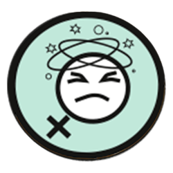
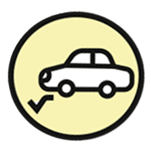
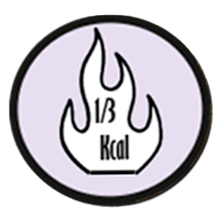
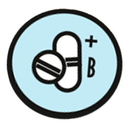

FORDELE
VED ALKOHOLFRI ØL
Når det kommer til fordelene ved at drikke alkoholfri øl, findes der en række argumenter for, hvorfor det faktisk kan være en god idé at drikke. Vi vil endda påstå at nogle af fordele vil overraske dig.
Der er især en ting, vi alle kan blive enige om ikke at savne dagen efter en bytur, nemlig tømmermænd. Og det er så simpelt som, ingen alkohol, ingen tømmermænd. Samtidig har du mligheden for at køre hjem fra diverse arrangementer. Så undgår du at være afhængig af et lift, eller den lange offentlige transport.
Et sundere alternativ, er helt klart en opsigtsvækkende fordel, ved den alkoholfrie øl. I modsætning til en almindelig øl, indeholder den alkoholfrie kun 1/3 af hvad en øl normalt vil være stoppet med. Så forsøger du at ændre livsstil og leve sundere, behøver du ikke være så bange for at overstige dit ønsket kalorieindtag.
Men er det så dissideret sundt at drikke alkoholfri øl? Det korte svar er -JA. For den alkoholfrie øl, har i den grad nogle sundhedsegenskaber, som kommer frem, når alkoholen i den ellers almindeligt bryggede øl, ikke er tilstede.
Øl er for det første med til at genoprette væskebalancen og det er ikke usædvanligt at se en maratonløbet få stukket en alkoholfri øl i hånden, efter et langt og svedigt løb. Du kan også få nogle vigtige vitaminer, sukker og antioxidanter, ved at drikke alkoholfri øl, da det er rigt på B vitaminer.